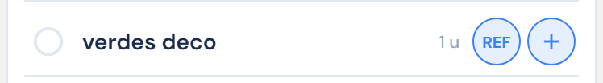
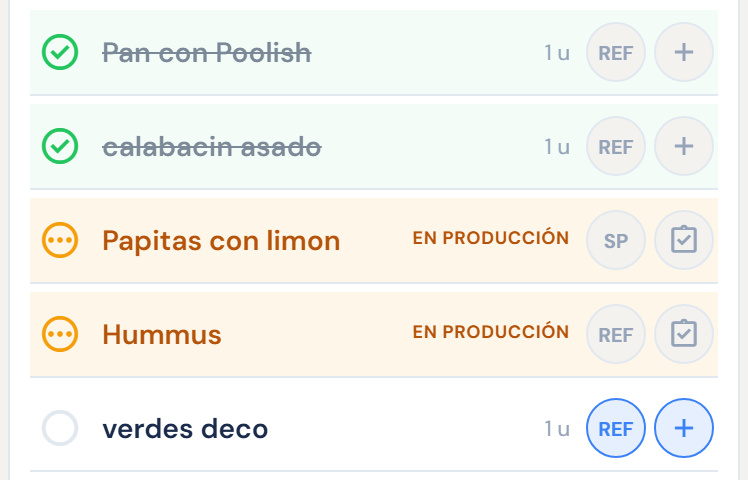
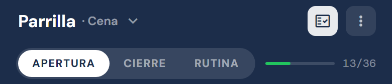
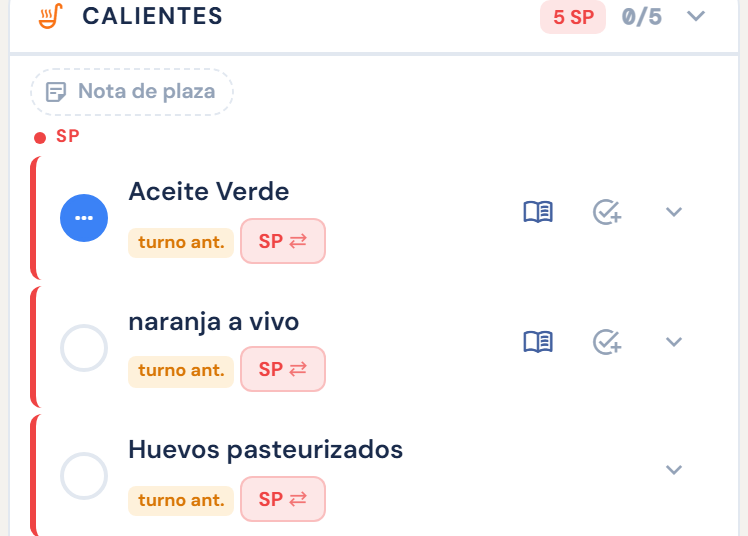
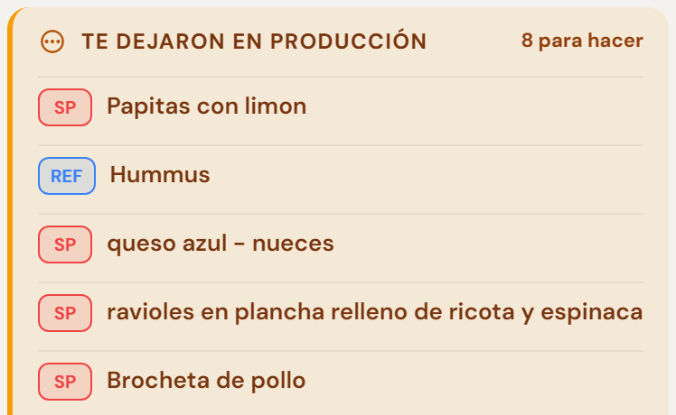

El jefe de cocina hace la misma vuelta en Mise · General, donde cae el menú del día entero. Lo que despacha ahí baja a Producción, a la columna de cada plaza.



Arriba a la derecha, en tu plaza: se prende una vez y queda prendido. Al lado elegís Apertura o Cierre; a la derecha ves cuánto llevás.


Una columna por plaza, los SP arriba de todo. Tildar acá tilda el mise, y al revés: nada se anota dos veces.
Lo que despachaste al cerrar aparece así en la apertura siguiente, con la urgencia de cada cosa y sin cantidades. Para eso se cierra.